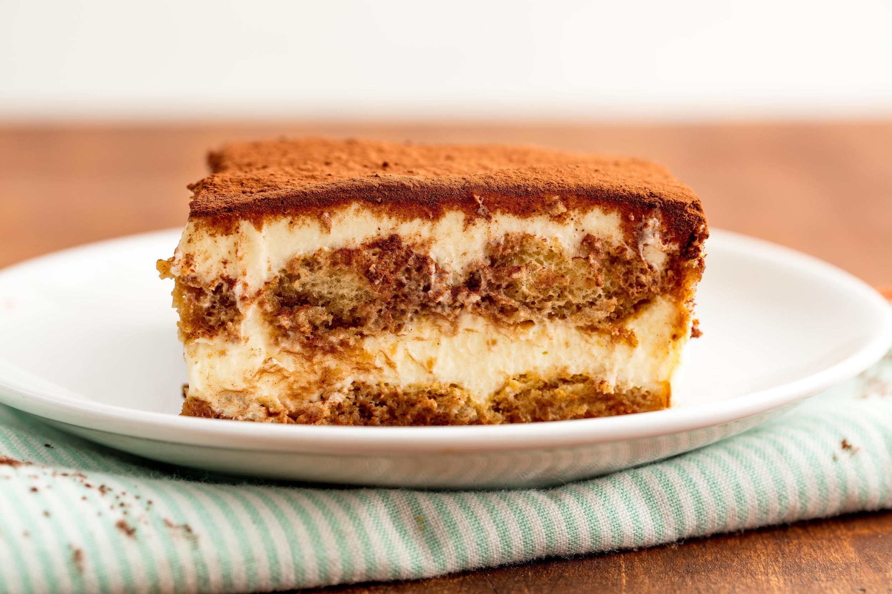

Tiramisu

Ingredients
- 2 eggs
- 125 g sugar
- 450 g mascarpone
- 300 mL cream
- squeeze of lemon juice
- plenty of coffee
- plenty of alcohol
- 1 package of lady fingers
- chocolate for grating
Equipment
- 1 large bowl
- 1 small bowl
- whisk
Procedure
- Separate two eggs, and put the yolks in a large bowl, whites in a small bowl
- Put half of the sugar in with the yolk and whisk to combine
- Slowly whisk mascarpone into yolk mixture
- Mix cream into yolk mixture until it's soft like whipped cream
- Add lemon juice to egg white, then whisk until soft and creamy
- Fold whites into yolk mixture
- Make a soaking mixture of coffee, sugar, and alcohol
- Assemble tiramisu, alternating a layer of cream and a layer of soaked lady fingers
- Grate chocolate on top of the last layer of cream
- Store in fridge until chilled and ready to eat